All references to Device Guardian within this guide also apply to Device Guardian Access Management, unless explicitly stated otherwise.
Overview
Device Guardian (DG) and Device Guardian Access Management (DGAM) are cloud-based solutions that consist of:
- A cloud-based server, hosted and managed by Zebra
- Client software designed for Zebra Android devices
DGAM enhances DG’s core capabilities by introducing additional features such as kiosk management and local device monitoring.
To enable communication between devices and the server, the client app must be installed and devices must be enrolled with the server. This setup is required for enabling device tracking and functionality. For installation guidance, refer to the section specific to your Enterprise Mobility Management (EMM) platform.
Note: StageNow deployment is not currently available, but it is planned for a future release.
Important information for migrating from Device Tracker: Refer to the Migration Guide.Requirements
Device Requirements
- Supported Devices - Refer to the Zebra support portal for compatible hardware for both devices and kiosks (DGAM-specific).
Important: The WS50, as a non-GMS device, does not support:- Map-based Locationing (due to the lack of Location Services API support)
- Tracking of Bluetooth Scanner Accessories
- Operating System - Refer to the Zebra support portal for compatible Android versions and LifeGuard updates for both devices and kiosks (DGAM-specific).
- Bluetooth and Location Services - Must be enabled for device tracking. For kiosks, only Bluetooth is required.
- Wi-Fi - Devices and kiosks must connect to a Wi-Fi network with cloud server access.
- Optional: Secondary BLE allows a device to be located even if it loses battery power or is powered off. This feature is available on select hardware with secondary BLE capability; see compatible hardware. Refer to the Secondary BLE Configuration guide for setup instructions.
Permissions
This section applies only to DGAM.
DGAM requires the following permissions to be granted for both kiosks and devices:
- Camera Permission - Required to scan the registration QR code, essential for registering the device with a kiosk.
- Location Permission - Enables location-based services and GPS-related functionalities.
- Music and Audio Permission - Allows the app to play or manage audio, such as alarms or sound notifications.
- Notifications Permission - Allows the application to send important updates or alerts to the user.
- Files and Media Permission - Specific to Android 11, required to read or write to device storage, adhering to Android 11’s scoped storage policies.
Network Requirements
To ensure seamless communication between the client app and cloud server, the following network configurations are required:
- Open HTTPS Port - Port 443 is typically used for HTTPS communication. Ensure this port is open, though it may vary based on network configurations.
- Web Portal Access - Allow the web portal URL (supplied by Zebra during onboarding) through the firewall or proxy for administrators and managers to access the dashboard.
- Email Addresses:
- Emails are sent from
zdtrksupport@zebra.comfor reporting or password resets. - Emails are sent from
NPDVIQFNoReply@zebra.comfor email notifications.
- Emails are sent from
- Firewall/Proxy Allowlist - Ensure the following domain names are allowed for web portal access and communication between the device client app and the cloud server.
If wildcards are supported:
connectivitycheck.gstatic.com*.googleapis.com*.firebaseio.com*.cloudfunctions.net[ProjectID].firebaseapp.com1[Web portal URL](supplied by Zebra during onboarding)
If wildcards are not supported, add these specific domains:
connectivitycheck.gstatic.comwww.googleapis.comfirestore.googleapis.comfirebasestorage.googleapis.comcloudfunctions.googleapis.comus-central1-[ProjectID].cloudfunctions.net1[ProjectID].firebaseio.com1[ProjectID]-default-rtdb.firebaseio.com1*.firebaseio.com2[ProjectID].firebaseapp.com[Web portal URL](supplied by Zebra during onboarding)
1[ProjectID] is included in the welcome email sent by Zebra services during the onboarding process.
2 For the Device Guardian client to communicate with the Cloud, *.firebaseio.com must be accessible. It is required to allow this URL in your Firewall or Proxy settings. If your Firewall or Proxy policy does not support wildcard entries, follow these steps to obtain the specific URL:
- Open the link in your browser (
[ProjectID]is provided during onboarding):https://[ProjectID]-default-rtdb.firebaseio.com/.settings/owner.json - Copy the URL displayed on the web page and add it to your firewall or proxy settings.
Important Note:Repeat steps 1 and 2 periodically, as Google's server resource allocation may cause the URL to change.
Web Portal Requirements
The web portal URL (supplied by Zebra during onboarding) is accessible via the following supported browsers:
- Chrome
- Edge
- Safari (v14.0 and later)
First-time use: Administrators must set their password by clicking Forgot Your Password on the login page and entering the registered email address. An email with a reset link will be sent.
If using single sign-on (SSO), see SSO for procedures on configuring SSO.
Licenses
End-user licenses are required for Device Guardian and Device Guardian Access Management to operate. Ensure the appropriate licenses are procured:
- Device Guardian License: Required for basic functionality.
- Device Guardian Access Management License: Required for advanced features like kiosk integration.
Installation & Setup
Setting up Device Guardian (DG) and Device Guardian Access Management (DGAM) involves installing the required components, configuring devices and ensuring all prerequisites are met. Make sure to review the Requirements section and refer to the Installation Notes section for important information.
DG Setup
To set up Device Guardian (DG), the following components and steps are required:
- Device Guardian Client App - Install the app on the device and enroll it to the server. Refer to the installation instructions specific to your EMM platform within this guide.
- Optional: Identity Guardian for Single Sign-On (SSO) - If enabling SSO for user accountability, install Identity Guardian v2.0 or higher on devices and configure it with SSO Authentication Configuration. For setup instructions, refer to the Identity Guardian Setup Guide.
DGAM Setup
This section applies only to DGAM.
To set up Device Guardian Access Management (DGAM), the following components and steps are required:
For Both Kiosks and Devices:
- Device Guardian Client App- Install the app on kiosks and devices, and enroll them to the server. Refer to the installation instructions specific to your EMM platform within this guide.
For Devices only:
- Identity Guardian Client App - Identity Guardian is required for user authentication and device accountability and is essential to operate DGAM. Configure Identity Guardian according to your user authentication strategy. For setup instructions, refer to the Identity Guardian Setup Guide.
- DataWedge Profile - Use Zebra's DataWedge application to facilitate barcode scanning for DGAM. Import the DataWedge profile onto devices to enable kiosk integration.
- Register Devices to Kiosk - Enable localized device monitoring and management directly through the kiosk by registering devices to the kiosk system.
For Kiosks Only:
- Assign the Kiosk to a Site - After enrolling the kiosk to the server, assign it to the appropriate site to enable monitoring and management.
Installation Notes
Important for Android 11:For Android 11 devices, Device Guardian must be launched after installation to apply the configurations.- Google Play Services update - During an update, the Android system automatically stops Device Guardian. After the update is complete, relaunch the Device Guardian app or reboot the device to resume device tracking.
- Config Service Notification - When configuring Device Guardian client for the first time, a notification appears indicating the Config Service is running. This notification disappears following a subsequent device reboot.
- Compatibility with Device Tracker - The Device Guardian server is backward compatible with Device Tracker client apps. However, the Device Tracker client app cannot be upgraded to the Device Guardian client app; a new installation of the Device Guardian client is required.
Import DataWedge Profile
This section applies only to DGAM.
Zebra's DataWedge application facilitates barcode scanning in DGAM. A specific DataWedge profile must be imported on devices being registered to a kiosk.
Steps to Import DataWedge Profile:
- Download the DataWedge Profile.
- Copy the File to Your Device: Transfer the DataWedge profile to the device’s internal storage.
- Import the Profile into DataWedge: Open the DataWedge app on your device (installed by default).

- From the top-right menu, select Settings.

- Select Import Profile. Browse to the file location from step 2. The profile is imported.

- From the top-right menu, select Settings.
- Verify Import: Return to the main screen of DataWedge to ensure the profile named "DGAM” is listed.

Register Device to Kiosk
This section applies only to DGAM.
Register devices with a designated kiosk to update the kiosk dashboard data and enable device monitoring within the kiosk. This is accomplished by using the device to scan a barcode displayed on the kiosk.
Steps to register a device to the kiosk:
- On the mobile device, open the Device Guardian app.
- Tap the top-right menu and select Register to Kiosk.

- A screen appears allowing you to scan a barcode.

- On the kiosk, tap the top-left menu. 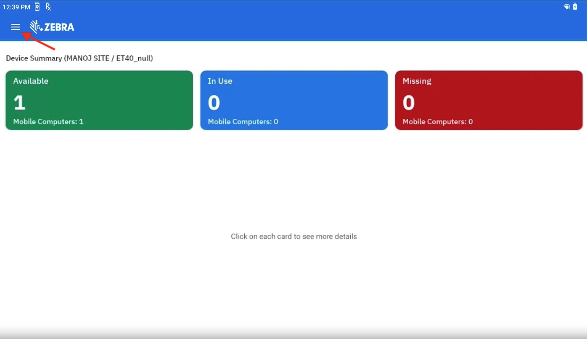
- Select Register / Sync.

- Tap Register Device.

- While on the screen from step 3, use the mobile device to scan either the QR code or barcode, completing the device registration to the specific kiosk.


Using ZDNA Cloud
Follow these steps to install Device Guardian via Managed Configurations with ZDNA Cloud and apply a policy that enrolls the device with the Device Guardian cloud server.
Part I: Enroll Device
Create and apply the StageNow barcode for device enrollment in ZDNA Cloud:
- Log in to ZDNA web portal. In the left menu, click New Device Setup.

- From the top-right, click Set Up Device.

- Configure the device for enrollment. Enter the appropriate internet settings, then click Next.

- Optionally, select the service for device enrollment. Click Next. 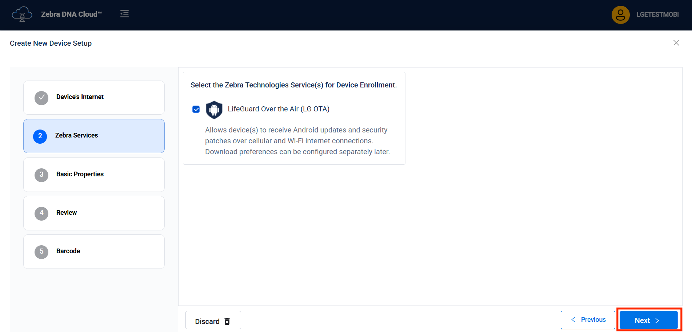
- Enter the properties and select the barcode type. Click Next.

- Review the information and click Next.

- The barcode is created. Click Done.

- The new setup is listed. Click View Barcode.

- For new enrollments, factory reset the device. Open StageNow and scan the barcode.
- After staging is complete, in ZDNA Cloud, click on My Devices and verify that the the enrolled device is listed.

- Allocate the license for the enrolled device. Click Licensing from the left menu. Under DNA CLoud License, click Allocate.

- Select the target device(s) to allocate the license to and click Allocate.

Part II: Download Config File
Download the required configuration file from the Device Guardian web portal:
- In the left menu of the Device Guardian web portal, go to Settings > Device Enrollment. Click on Download Kit.

- Download the file and extract its contents. The Managed Configurations .CONFIG file is required for a later step.
Part III: Create and Apply Policy
Create and apply a Device Guardian Managed Configurations policy, which installs Device Guardian on the device and enrolls it in the Device Guardian server:
- In the ZDNA Cloud web portal, click My Apps.
- If adding Device Guardian for the first time, click Add App.
- If a new Device Guardian app version is needed, click Add Version.

- Select the appropriate hosting location, provide the details, and click Upload.

- The application version is added. Click Setup.

- Click Next.

- Click Yes to configure the app.

- Select or enter the required Device Guardian Managed Configurations; for information on these settings, see Managed Configurations. Ensure the following Server Connectivity settings are configured before clicking Next:
- Server Connectivity Settings: [Copy and paste the content from the Managed Configurations
.CONFIGfile from step II.2.] 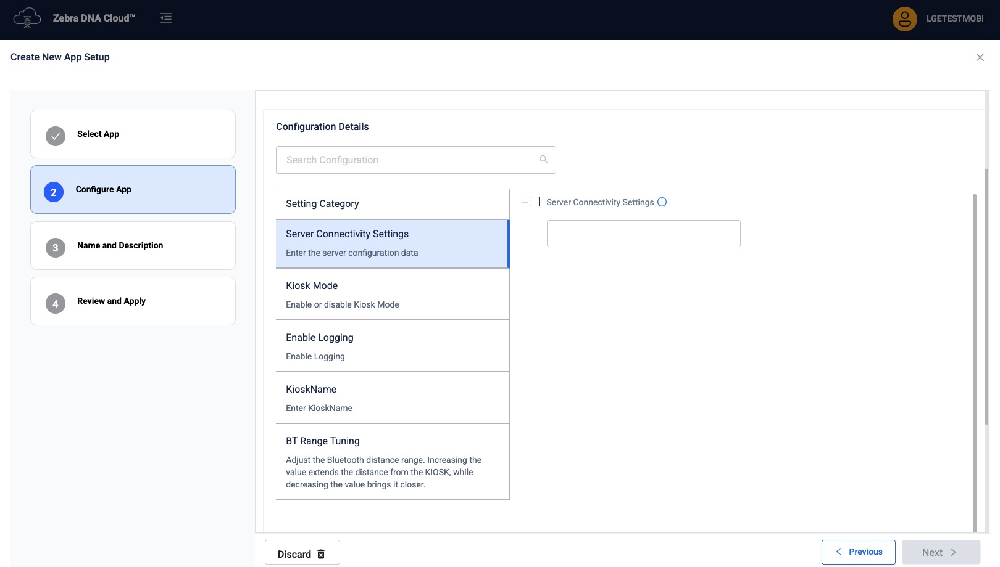
- Server Connectivity Settings: [Copy and paste the content from the Managed Configurations
- Enter a description for the setup and click Next.

- Review the settings and click Apply Now.

- Select the target device(s). Click Apply.

- The device(s) is listed under the App Setup tab with the status of applying the configuration. Once complete, "Success" is displayed as the status.

Part IV: Send Intents (Android 11 Only)
For Android 11 devices, intents must be sent to grant the necessary permissions and start Device Guardian, allowing the configurations to be applied:
- Download the DeviceGuardian.xml file, which will be needed in a later step.
- In the ZDNA Cloud web portal, go to Device Settings. Click New Setting, then Create New Setting (Advanced).

- Select System Configuration. Enable Pass-Through Command and paste the content from
DeviceGuardian.xmlinto the text field. Click Next.
- Enter a Device Settings Name and Description, if needed, then click Next.

- Review the configuration settings. Click Apply Now.

- Select the target device(s) to apply the configuration. Click Apply. 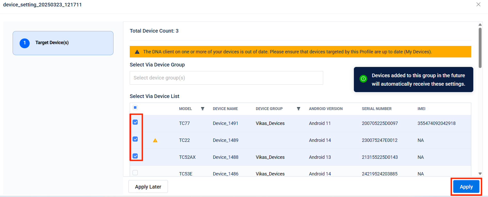
Using Microsoft Intune
Follow these steps to use Microsoft Intune to install Device Guardian from the Google Play Store and apply a policy that enrolls the device with the Device Guardian server.
Screen Variations Note: The screen UI may vary depending on the EMM version in use. Refer to your EMM user guide for additional guidance.
Part I: Enroll Device
Enroll the device in Microsoft Intune using the standard EMM procedure.
Part II: Download Config File
Download the required configuration file from the Device Guardian web portal:
- In the left menu of the Device Guardian web portal, go to Settings > Device Enrollment. Click on Download Kit.
- Download the file and extract its contents. The Managed Configurations .CONFIG file is required for a later step.
Part III: Create and Apply Policy
Create and apply a policy to install Device Guardian and enroll it in the Device Guardian server:
- In the Microsoft Intune web console, in Apps click Android.

- Click Create.

- From the dropdown, select Managed Google Play app, then click Select.

- Search for the Device Guardian app and click on it.

- Click Select, then click Sync.

- The Device Guardian app is added to the Play Store. Click on the app in the list.

- Click on Properties and Edit near the Assignments section.

- Under the Required section, click Add group.

- Choose the group to install the app and click Select.

- Update the priority. Click Default under the Update Priority column.

- For the Update Priority dropdown, select High Priority. Click OK. 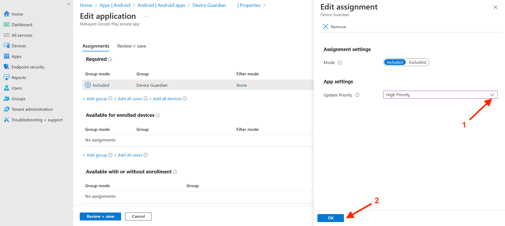
- The group is added with the updated priority. Click Review + save. 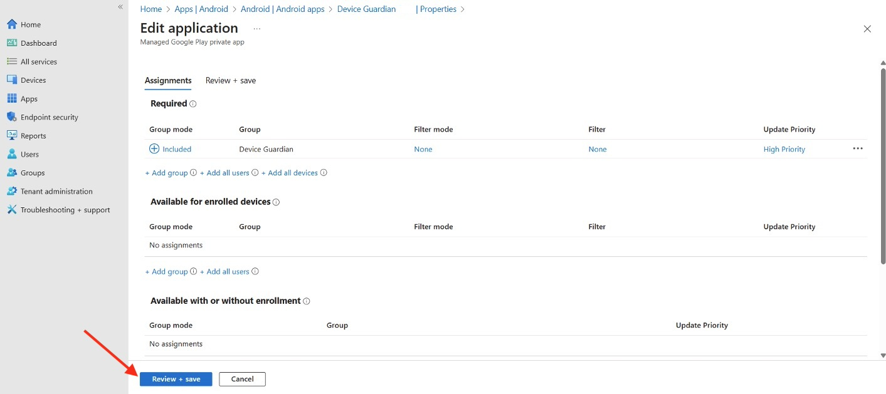
- Click Save.

- Create a profile to enroll the device to Device Guardian. From the left menu, click Apps > Configuration. Click Create and select Managed devices.

- Enter or select the following, then click OK.
- Name: [Enter a name for the policy]
- Platform: Android Enterprise
- Profile Type: Fully Manged, Dedicated, and Corporate-Owned Work Profile Only
- Targeted App: Device Guardian

- Click Save.

- In the Settings screen, for Configuration settings format select Use configuration designer. Click Next.

- Select all the configuration keys and click OK.

- For Server Connectivity Settings, copy and paste the content from the Managed Configurations .CONFIG file from step II.2. Click Next.

- Under Included groups, click Add groups. 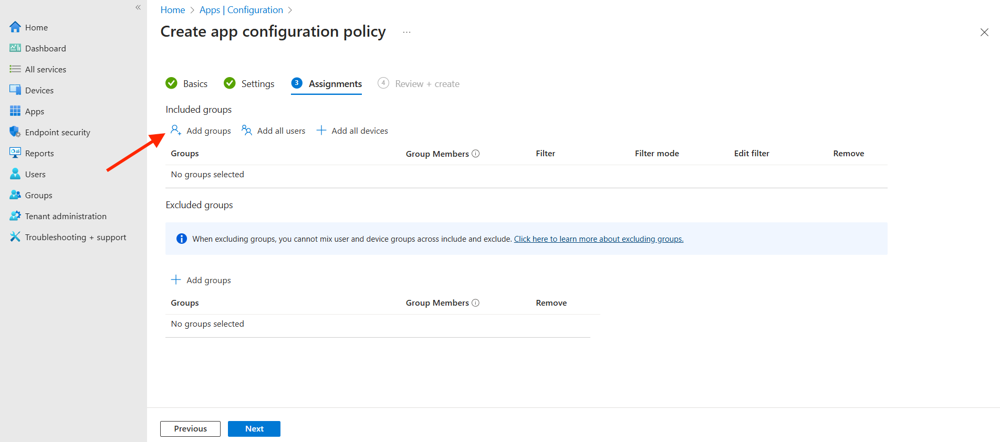
- Choose the group to apply the policy and click Select.

- Click Next.

- Review the configuration and click Create. 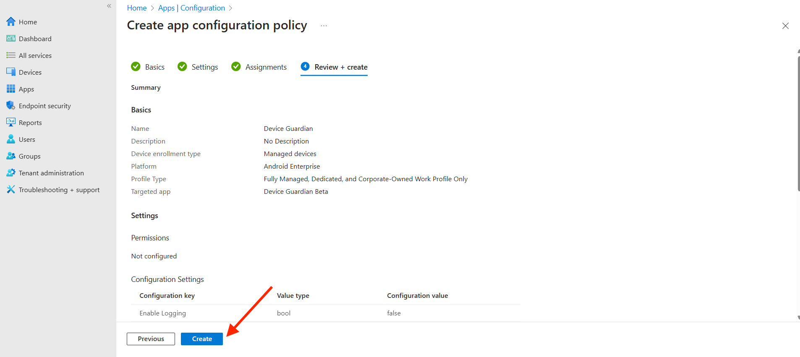 Device Guardian is installed and the devices are enrolled to the server.
Part IV: Send Intent (Android 11 Only)
For Android 11 devices, an intent must be sent to start Device Guardian, allowing the configurations to be applied:
In the Microsoft Intune web console, go to Apps and select Android.

Click Create.

For App type, select Managed Google Play app and click Select.

Search for Zebra OEMConfig app, then click on the app.

Click Select, then click Sync.

The Zebra OEMConfig app is added to the app list. Select the app.

Click Properties.

By Assignments, click Edit.

Under the Required section, click Add group. 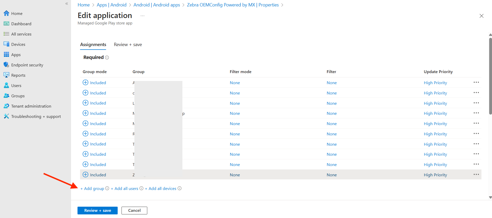
Choose the required device group, then click Select. 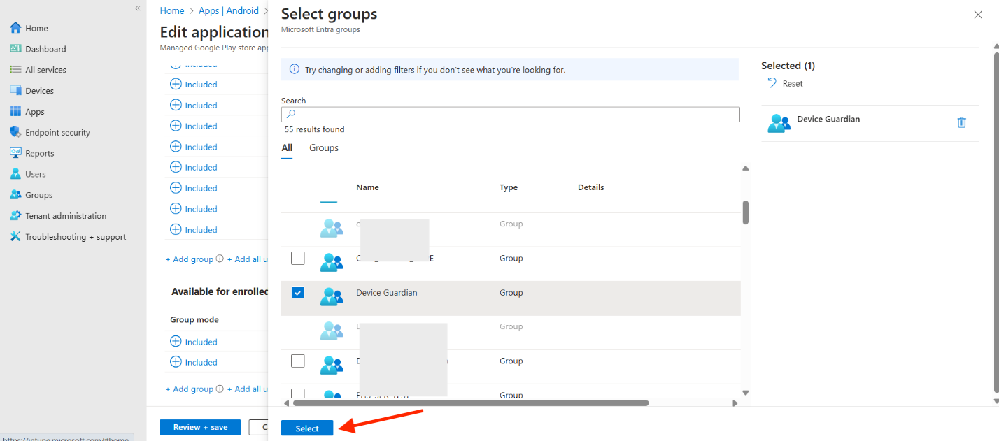
The group is added. To enable automatic app installation, update the priority by setting it to high. Under Update Priority, click Default. 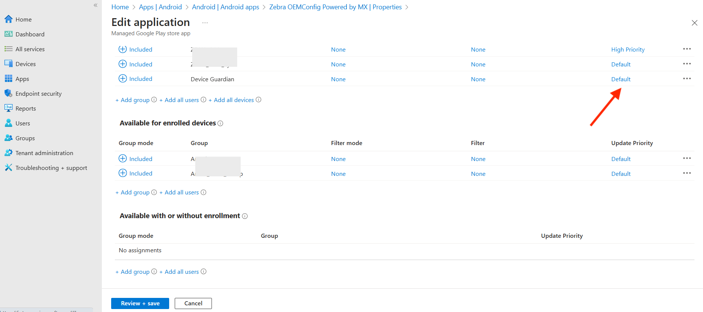
For Update Priority, select High Priority. Then, click OK.

Check that the device group is added to the list, then click Review and Save.

Click Save. The OEMConfig app gets installed to the assigned device group.

Configure the Device Guardian app to get enrolled to the server. Go to Devices and select Android.

Under Managed Devices, click Configuration. Click Create > New Policy.

Select the following and click Create: - Platform: Android Enterprise - Profile Type: OEMConfig

Enter a name, click Select an OEMConfig app and select Zebra OEMConfig Powered by MX. Click Select. When the app is added, click Next.

In Configuration settings, scroll down and select System Configuration.

Copy and paste the following text into the Pass-Through Command field, then click Next:
<wap-provisioningdoc> <characteristic version="9.2" type="Intent"> <parm name="Action" value="StartActivity"/> <parm name="ActionName" value="android.intent.action.MAIN"/> <parm name="Type" value="explicit"/> <parm name="Package" value="com.zebra.mdna.dg"/> <parm name="Class" value="com.zebra.mdna.dg.SplashActivity"/> </characteristic> </wap-provisioningdoc>
Click Next.

Under Included groups, click Add groups to assign the configurations to the devices.

Choose the device group and click Select. 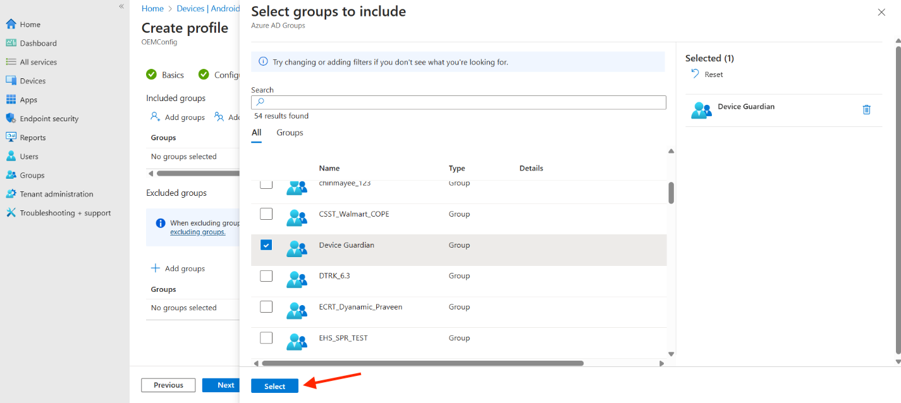
The group is added. Click Next.

Review the changes and click Create. This launches Device Guardian, allowing the app configurations to be applied.

Using SOTI MobiControl
Choose one of two methods to install Device Guardian and enroll devices to the server using SOTI MobiControl:
Screen Variations Note: The screen UI may vary depending on the EMM version in use. Refer to your EMM user guide for additional guidance.
Google Play
Follow these steps to use SOTI MobiControl to install Device Guardian from the Google Play Store and apply a policy that enrolls the device with the Device Guardian server.
Part I: Enroll Device
Enroll the device in SOTI MobiControl using the standard EMM procedure.
Part II: Download Config File
Download the required configuration file from the Device Guardian web portal:
- In the left menu of the Device Guardian web portal, go to Settings > Device Enrollment. Click on Download Kit.
- Download the file and extract its contents. The Managed Configurations .CONFIG file is required for a later step.
Part III: Create and Apply Policy
Create and apply a policy to install Device Guardian and enroll the device in the Device Guardian server:
- In the SOTI MobiControl web console, go to Apps > Policies. Click New App Policy.

- Select Android Enterprise.

- Enter an App Policy Name, then click the Apps tab.

- Click +.

- Select the following, then search for the Device Guardian app.
- App Source: Managed Google Play
- Select: Zebra Technologies

- Click on the Device Guardian app.

- Click on the options menu and select Configure. 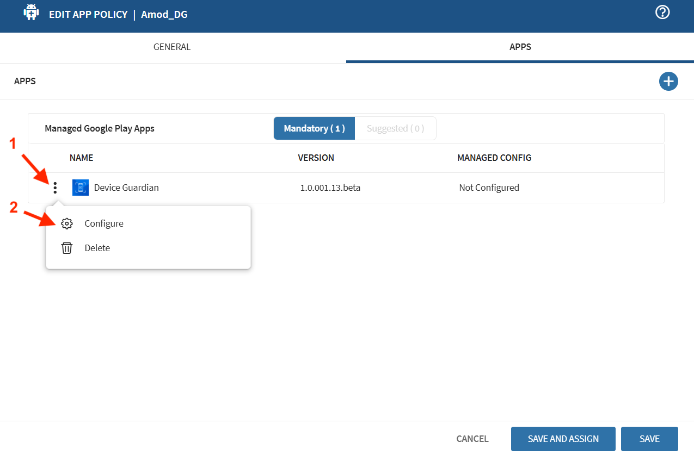
- The application details are populated. Click Installation Options.

- In Installation Options, set the Priority to High Priority and enable Launch App After Installation. This step is particularly important for Android 11 devices. Then, click Managed App Config.

- Toggle to Enable Managed App Config. Select or enter the required Device Guardian Managed Configurations; for information on these settings, see Managed Configurations. Ensure the following Server Connectivity settings are configured before clicking Save:
- Server Connectivity Settings: [If prompted to import the configuration from a previous version, click Cancel. Then copy and paste the content from the Managed Configurations
.CONFIGfile from step II.2.] 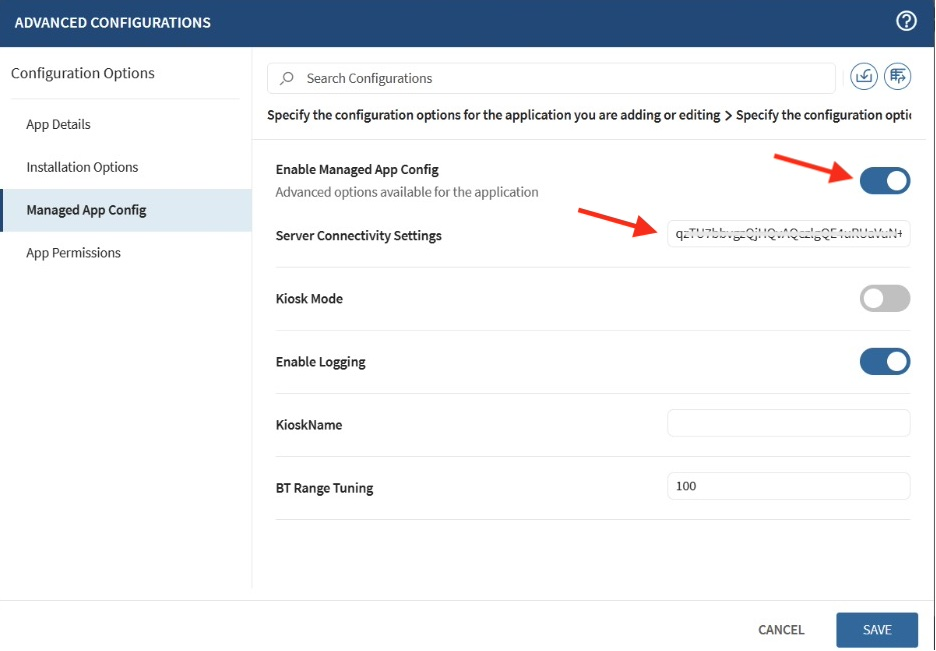
- Server Connectivity Settings: [If prompted to import the configuration from a previous version, click Cancel. Then copy and paste the content from the Managed Configurations
- Select the new policy created.

- Click on the Assign icon, the second icon from the top menu.

- Search for the enrolled device, select the device, and click Assign. This applies the policy to the device.

Managed Configurations
Follow these steps to install Device Guardian via Managed Configurations with SOTI MobiControl and apply a policy that enrolls the device with the Device Guardian server.
Part I: Enroll Device
Enroll the device to SOTI MobiControl using the standard EMM procedure. After enrollment is complete, verify that the device has been added to the system.
Part II: Download Config File
Download the required configuration file from the Device Guardian web portal:
- In the left menu of the Device Guardian web portal, go to Settings > Device Enrollment. Click on Download Kit.
- Download the file and extract its contents. The Managed Configurations .CONFIG file is required for a later step.
Part III: Create and Apply Policy
Create and apply a Device Guardian Managed Configurations policy, which installs Device Guardian on the device and enrolls it in the Device Guardian server:
- In the SOTI MobiControl web console, click Policies.

- Click New App Policy.

- Select Android and choose Android Enterprise.

- Enter a policy name and click on the Apps tab.

- Click +.

- For the App Source dropdown, select Enterprise.

- By default, Import is selected for the Source. Click Browse File and select the Device Guardian .APK file.

- After the file is uploaded, click Configure. 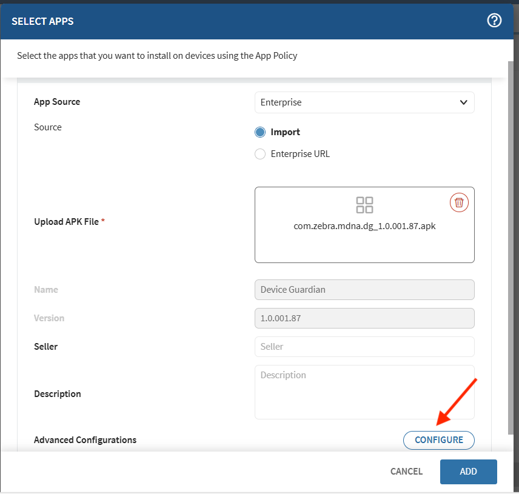
- The App Details are populated. Click Installation Options.

- Deployment Type is set to Mandatory by default. Toggle to enable Launch App After Installation and click Managed App Config.

- Toggle on Enable Managed App Config.

- Tap Cancel when prompted to import config to create a new config. 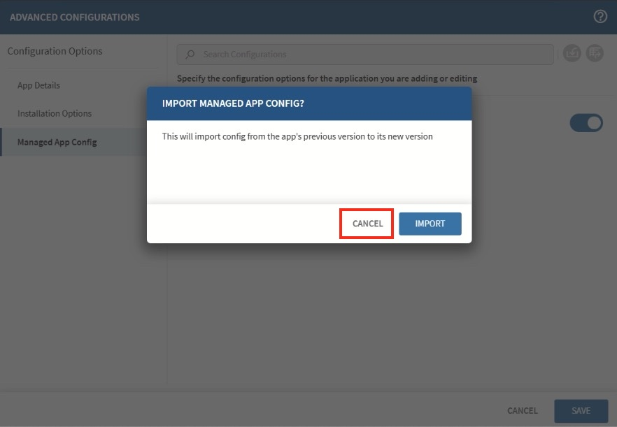
- For Server Connectivity Settings, copy and paste the content from the Managed Configurations .CONFIG file from step II.2. Click Save. 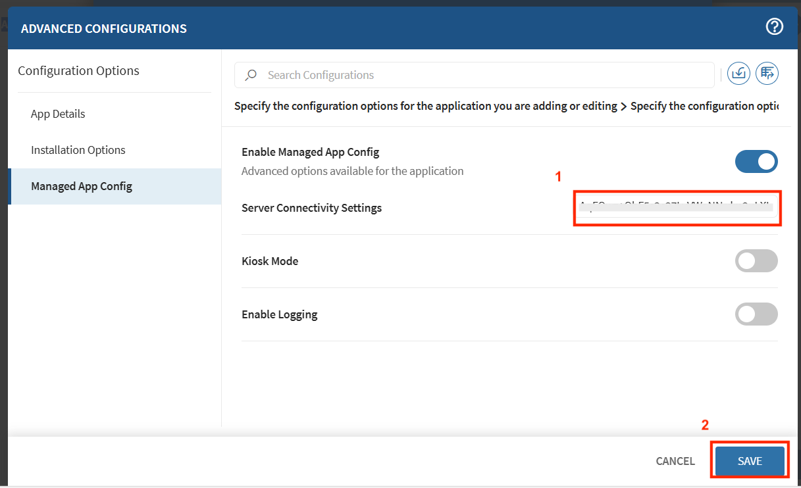
- Click Add.

- The policy is created. Click Save and Assign.

- Search for the enrolled device and select it. Click Assign.

- Navigate to the Devices section.

- Search for the enrolled device and select it.

- Click the Configurations tab and verify that the policy is assigned, ensuring the device is installed and registered in Device Guardian.

Part IV: Send Intents (Android 11 Only)
For Android 11 devices, intents must be sent to grant the necessary permissions and start Device Guardian, allowing the configurations to be applied:
Download the DeviceGuardian.xml file, which will be needed in a later step.
Create a file named
DG_XML_SOTI.CMDwith the following content and place this file in the same folder as the .XML file:mxconfig /sdcard/DeviceGuardian.xmlIn the SOTI MobiControl web console, click Packages from the left menu.

Click Download Package Studio.

MobiControl Package Studio
MCStudio.exeis downloaded. Execute to launch this app. 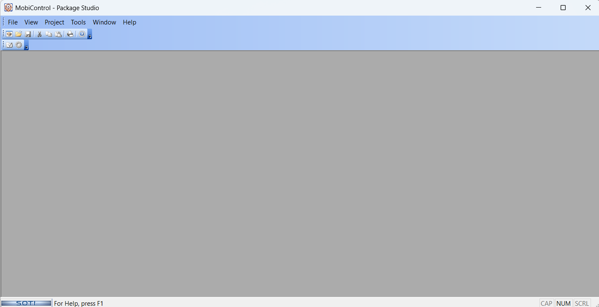Create a new package file for Device Guardian .XML. Click File > Create New Package File.

Enter the following and click Next:
- Project Name - [Enter a name for the project]
- Project Location - [Browse to the folder location to save the project]
- Platform - Android

Click Post-Install, browse to
DG_XML_SOTI.CMDcreated in step 2 and click Next.
Click Add. Click Add Files and browse to add
DeviceGuardian.xml.

Leave the default destination as
%sdcard%/. Click OK.
The file is added. Click Next, then click Finish.

A popup message appears indicating that the package is created. Click Build Package Now.

When complete, the output window displays the folder path with the package (.PCG file) is created. Record this folder path.

Upload the .PCG file to Soti MobiControl. In the SOTI MobiControl web console, click Packages and Add Package.

Click Import.

Select Android.

Browse to the package file (.PCG) folder path from step 13 and click Upload.

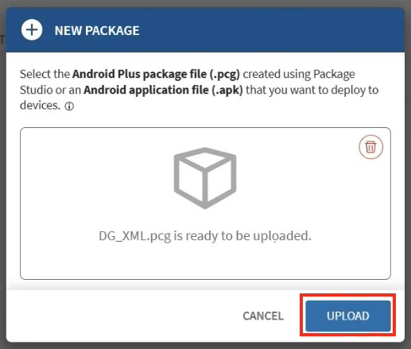 The new created package is listed.

Create a profile containing this package to deploy to devices. From the left menu, click Profiles.

Click Add Profiles, select Android, and select Work Managed.

In the General tab, enter the Profile Name and then click the Packages tab.

Click "+"

Search for the package just created, select it, and click Add to Profile.

Click Save and Assign.

Search for the device(s) to deploy the policy and click Assign.

Using Workspace ONE UEM
Choose one of two methods to install Device Guardian and enroll devices to the server using Workspace ONE Unified Endpoint Management (UEM), formerly known as AirWatch:
Screen Variations Note: The screen UI may vary depending on the EMM version in use. Refer to your EMM user guide for additional guidance.
Google Play
Follow these steps to use Workspace ONE UEM to install Device Guardian from the Google Play Store and apply a policy that enrolls the device with the Device Guardian server.
Part I: Enroll Device
Enroll the device in Workspace ONE UEM using the standard EMM procedure. After enrollment is complete, go to Devices > List View in the web console to verify that the device is listed.
Part II: Download Config File
Download the required configuration file from the Device Guardian web portal:
- In the left menu of the Device Guardian web portal, go to Settings > Device Enrollment. Click on Download Kit.
- Download the file and extract its contents. The Managed Configurations .CONFIG file is required for a later step.
Part III: Create and Apply Policy
Create and apply a policy to install Device Guardian and enroll the device in the Device Guardian server:
- In the Workspace ONE UEM web console, go to Resources > Native. Click Public, then Add Application.

- Enter the following, then click Search App Store.
- Platform: Android
- Name: [Enter a name for the application]

- Search for Device Guardian app and click on the app.

- Click Select.

- Click on the app.

- Click Edit.

- Enter a name and click Save & Assign.

- Click Add Assignment. 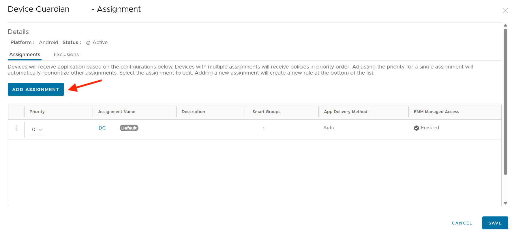
- Enter or select the following, then click Application Configuration:
- Name: [Enter an assignment name]
- Assignment Groups: [Enter group to assign the app]
- App Delivery Method: Auto
- Auto Update Priority: High priority

- Enable Managed Access and Send Configuration. Select or enter the required Device Guardian Managed Configurations; for information on these settings, see Managed Configurations. Ensure the following Server Connectivity settings are configured before clicking Save:
- Server Connectivity Settings: [Copy and paste the content from the Managed Configurations
.CONFIGfile from step II.2.] 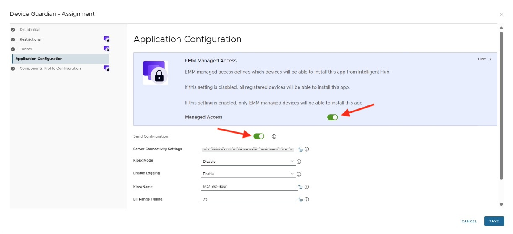
- Server Connectivity Settings: [Copy and paste the content from the Managed Configurations
- Click Publish.

- From the left menu, click Groups & Settings > Assignment Groups. Click on the assignment group created. 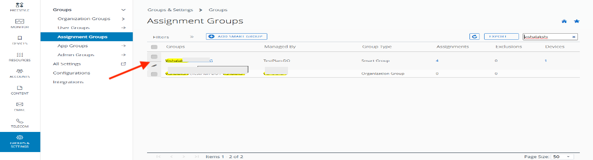
- Add the configured device(s) and click Next.

- Check for the assigned app and click Publish.
Part IV: Send Intent (Android 11 Only)
For Android 11 devices, an intent must be sent to start Device Guardian, allowing the configurations to be applied:
In the Workspace ONE UEM web console, go to Orchestration > File Actions. Click Add Files/Actions.

Select Android.

Enter a name for the file/action and click on the Manifest tab.

Under Installation Manifest, click Add Action.

Enter or select the following, then click Save.
Action(s) To Perform: Run Intent
Command Line and Arguments to run: [Copy and paste the text below.]
mode=explicit,broadcast=false,action=android.intent.action.MAIN,package=com.zebra.mdna.dg,class=com.zebra.mdna.dg.SplashActivityTimeOut: [Enter any timeout value.] 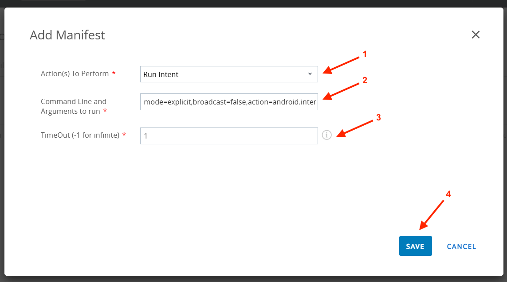
Click Save. The file/action is created.

Create a product using the file/action just created. Go to Orchestration > Products and click Add Product.

Select Android.

Enter a name, assign a Smart Group, and click on the Manifest tab.

Click Add.

Select the following and click Save.
- Action(s) To Perform: File/Action - Install
- Files/Actions: [Select the File/Action created from step 6.]

Click Activate.

The assigned devices are listed. Click Activate. This sends the intent, launching Device Guardian on the devices for the configurations to be applied.

Managed Configurations
Follow these steps to install Device Guardian via Managed Configurations with Workspace ONE Unified Endpoint Management (UEM) and apply a policy that enrolls the device with the Device Guardian server.
Part I: Enroll Device
Enroll the device in Workspace ONE UEM using the standard EMM procedure. After enrollment is complete, go to Devices > List View in the web console to verify that the device is listed.

Part II: Download Config File
Download the required configuration file from the Device Guardian web portal:
- In the left menu of the Device Guardian web portal, go to Settings > Device Enrollment. Click on Download Kit.
- Download the file and extract its contents. The Managed Configurations .CONFIG file is required for a later step.
Part III: Create and Apply Policy
Create and apply a Device Guardian Managed Configurations policy, which installs Device Guardian on the device and enrolls it in the Device Guardian server:
- In the Workspace ONE UEM web console, go to Resources > Native. Click Internal, then Add, and select Application File.

- Click Upload.

- Click Choose File. Select the Device Guardian .APK file to upload, then click Save.

- The Application File is populated with the file name. Click Continue.

- Enter the application name and version. Click Save and Assign.

- In the Assignment screen, enter the information prompted. From the left menu, click Restrictions.

- Enable Managed Access. From the left menu, click Application Configuration.

- Enable Send Configuration. For Server Connectivity Settings, copy and paste the content from the Managed Configurations .CONFIG file from step II.2. Select the target device(s). Click Save.

- Preview the assigned device group and click Publish.

- Navigate to Groups & Settings > Assignment Groups. Select the group to apply the policy. 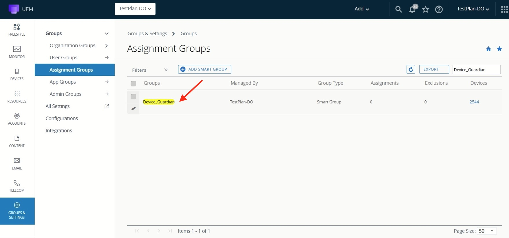
- Select the device(s) to configure, then click Next.

- Verify the assigned applications and click Publish. The policy is applied to the device.

Part IV: Send Intents (Android 11 Only)
For Android 11 devices, follow these steps to send intents that grant the necessary permissions and start Device Guardian:
- Download the DeviceGuardian.xml file, which will be needed in a later step.
- In the Workspace ONE UEM web console, go to Orchestration > File Actions. Click Add Files/Actions.

- Select Android.

- Enter a name for the File/Action and click the Files tab.

- Click Add Files.

- Choose the
DeviceGuardian.xmldownloaded from step 1 and click Save.
- Enter
/sdcardfor the Download Path, and enter the version if needed. Click Save.
- The file is added. Click the Manifest tab.

- Under Installation Manifest, click Add Action.

- Select the following, then click Save.
- Action(s) To Perform: Apply Custom Settings
- File: DeviceGuardiana.xml

- The manifest is added. Click Save.

- The File/Action is created. Next, apply it to the device(s). Go to Orchestration > Product. Click Add Product.

- Select Android.

- Enter a name and assign it to the appropriate Smart Groups. Click the Manifest tab. 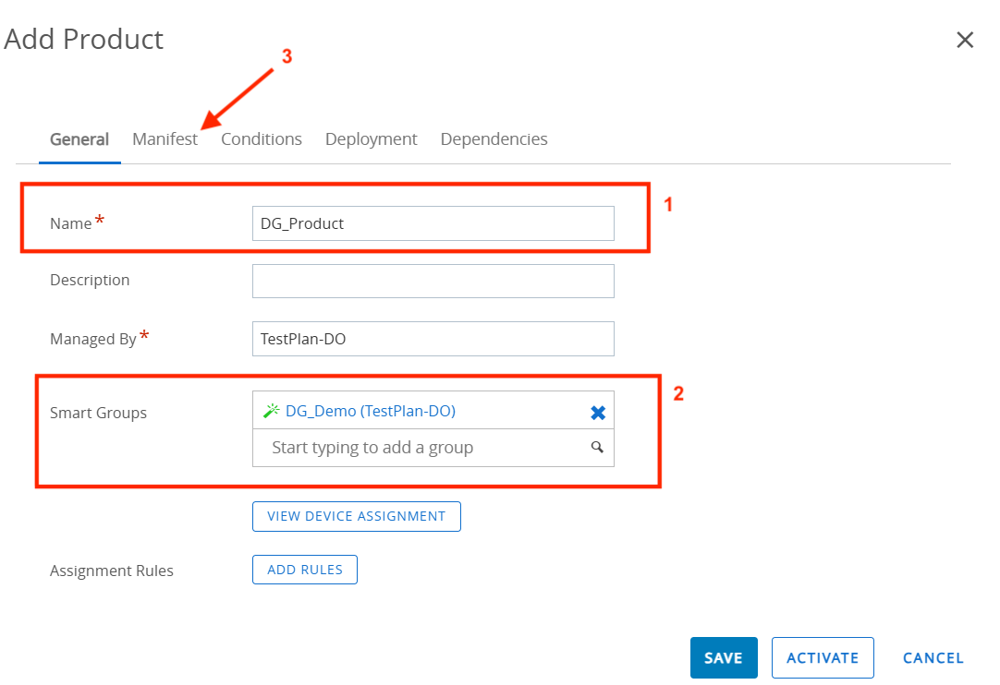
- Click Add.

- Select the following options and click Save:
- Action(s) To Perform: Application - Install
- Application: Device Guardian

- The application is added to the manifest. Click Add again to include the XML file.

- Enter the following, then click Save:
- Action(s) To Perform: File/Action - Install
- Application: [Nme of XML file added]

- Click Save.

- Click Activate. The policy is applied to the selected device(s).

Using 42Gears SureMDM
Choose one of two methods to install Device Guardian and enroll devices to the server using 42Gears SureMDM:
Screen Variations Note: The screen UI may vary depending on the EMM version in use. Refer to your EMM user guide for additional guidance.
Google Play
Follow these steps to use 42Gears SureMDM to install Device Guardian from the Google Play Store and apply a policy that enrolls the device with the Device Guardian server.
Part I: Enroll Device
Enroll the device in 42Gears SureMDM using the standard EMM procedure.
Part II: Download Config File
Download the required configuration file from the Device Guardian web portal:
- In the left menu of the Device Guardian web portal, go to Settings > Device Enrollment. Click on Download Kit.
- Download the file and extract its contents. The Managed Configurations .CONFIG file is required for a later step.
Part III: Create and Apply Policy
Create and apply a policy to install Device Guardian and enroll the device in the Device Guardian server:
- In the 42Gears SureMDM web console, click on Profiles > Application Policy and click Add.

- For the Application Source, select Play For Work.

- Search for Device Guardian and click on the app.

- Click Select.

- Enter the following, then click Save:
- Configuration Name: [Enter a name]
- Server Connectivity Settings: [Copy and paste the content from the Managed Configurations .CONFIG file from step II.2.]
- Kiosk Mode: [Toggle to enable if the device is a kiosk]

- Enter or select the following for the application policy, then click Next.
- Install Silently: [Toggle to enable]
- Allow in Kiosk Mode: [Toggle to enable if the device is a kiosk]
- App Update Mode: High Priority Mode

- Grant all permissions, then click Finish. 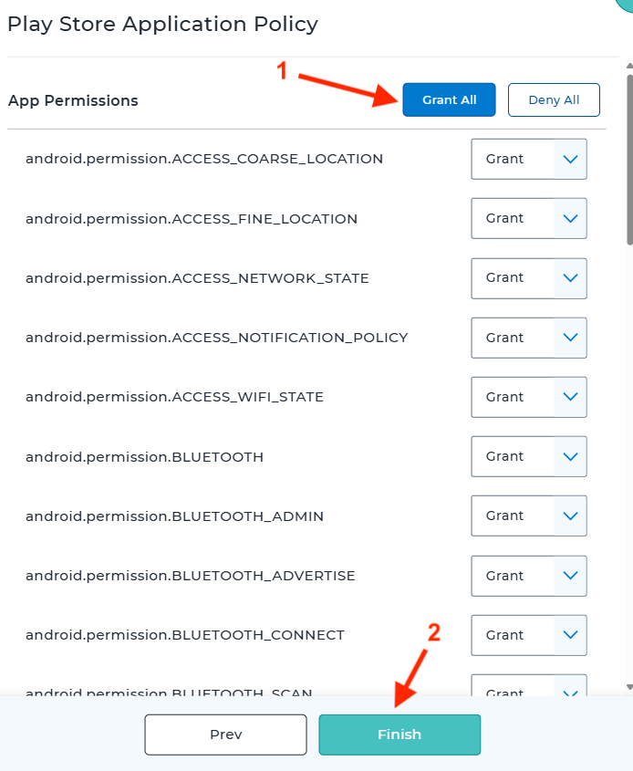
- Enter a profile name and click Save.

- From the options menu click Assign Profile to Group.

- Select the device group(s) to apply the profile. Click OK.

Managed Configurations
Follow these steps to install Device Guardian via Managed Configurations with 42Gears SureMDM and apply a policy that enrolls the device with the Device Guardian server.
Part I: Enroll Device
Enroll the device in 42Gears SureMDM using the standard EMM procedure. After enrollment is complete, verify that the device has been added to the system.
Part II: Download Config File
Download the required configuration file from the Device Guardian web portal:
- In the left menu of the Device Guardian web portal, go to Settings > Device Enrollment. Click on Download Kit.
- Download the file and extract its contents. The Managed Configurations .CONFIG file is required for a later step.
Part III: Create and Apply Policy
Create and apply a Device Guardian Managed Configurations policy, which installs Device Guardian on the device and enrolls it in the Device Guardian server:
- In the 42Gears SureMDM web console, go to the Android App Store and click Add New App.

- Select Upload Apk.

- Upload the Device Guardian .APK.

- Enter the required information. Click Add.

- Create the application policy. Click Profiles and Add.

- Select Primary Profile for the Profile Type.

- Click Configure.

- Click Add. 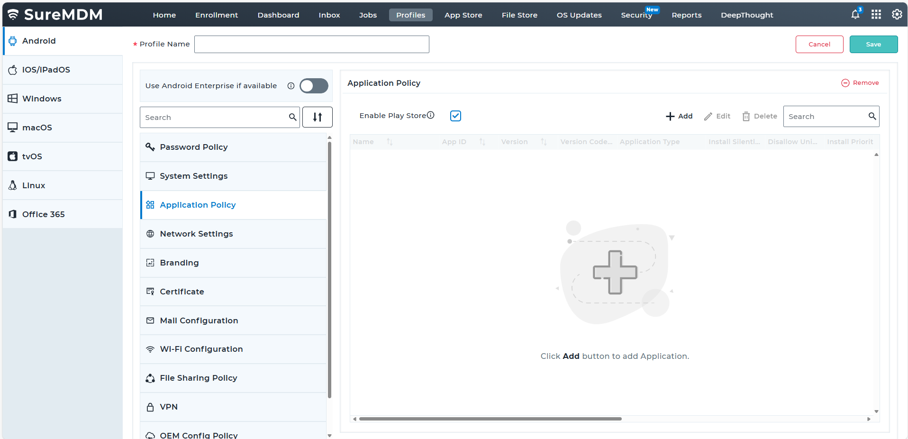
- Select SureMDM App Store.

- From the dropdown, select the Device Guardian app uploaded. Click Next.

- Select or enter the required Device Guardian Managed Configurations; for information on these settings, see Managed Configurations. Ensure the following Server Connectivity settings are configured before clicking Done:
- Server Connectivity Settings: [Copy and paste the content from the Managed Configurations
.CONFIGfile from step II.2.]
- Server Connectivity Settings: [Copy and paste the content from the Managed Configurations
- Select any desired options, then click Add.

- Select the app policy created, enter a profile name and click Save.

- From the top-right hamburger menu, select Assign Profile to Group. 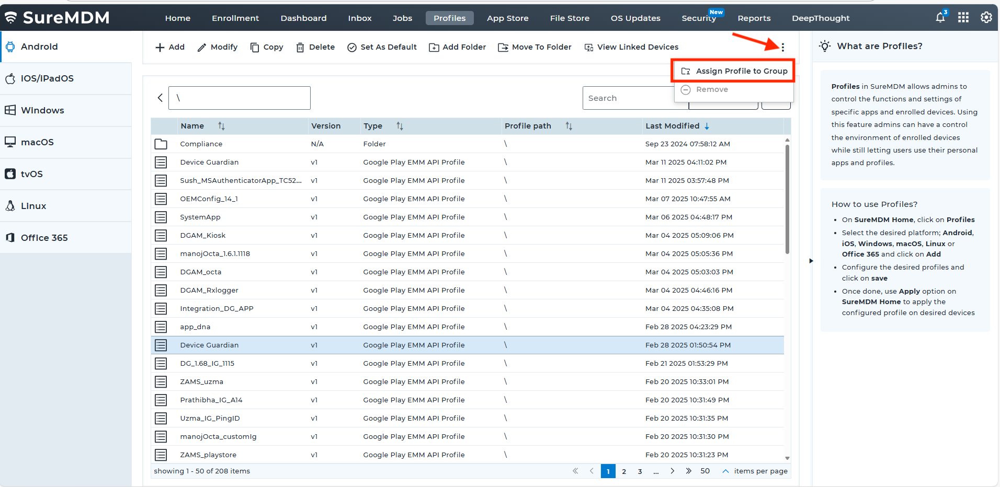
- Select the group and click OK. The policy is applied to the device.

Managed Configurations
Managed configurations are standardized feature developed by Google and the Android community, enabling remote configuration of applications and devices through an Enterprise Mobility Management (EMM) system, such as Zebra DNA Cloud, that supports this specification.
App features that can be managed using Managed Configurations are defined in the its schema. For Device Guardian, the schema becomes available once the APK is uploaded to the EMM, either as an Enterprise app or through its app store. The schema defines the app's configurable features and provides the necessary information to present the app's management interface in the EMM console. This data-driven interface allows new features and their corresponding UI attributes to be delivered as soon as they become available. The interface may vary slightly depending on the EMM system in use.
This section discusses the Managed Confgurations available for Device Guardian, as seen in your supported EMM, and serves as an extension to the Installation procedure for your specific EMM.
Managed Configuration Options:
| Name | Description | Value(s) |
|---|---|---|
| Server Connectivity Settings | Enter the server configuration data. | [Copy and paste the content from the Managed Configurations .CONFIG file available in the Device Enrollment Download Kit] |
| Kiosk Mode | Enable or disable kiosk mode. Enable this option if the device is a kiosk. | Enable Disable |
| Enable Logging | Enable or disable logging feature. Log messages are directed to Android Debug Bridge (adb). | Enable Disable |
| KioskName | If the device is configured as a kiosk, assign a name for identification purposes. | [Enter string] |
| BT Range Tuning | Adjust the Received Signal Strength Indicator (RSSI) threshold to control the Bluetooth range between a device and the kiosk. This enables devices to automatically log out when placed in a powered cradle within the kiosk's range and triggers an alarm if the device is moved out of range while the user is still logged in. Default value: 75. • Prerequisite: The Bluetooth Proximity setting must be enabled during site creation. • Adjustment Options: Increasing this value extends the Bluetooth detection range from the kiosk. Decreasing the value reduces the range, limiting the detection radius. Caution: Various factors can affect beacon signal strength, such as environmental conditions and device placement. It is essential to manually fine-tune this setting to align with your specific environment and meet your business requirements. |
[Integer value] |
Prevent Play Store Updates
By default, Device Guardian, along with other Google Play apps, is set to update automatically. However, administrators managing Android devices may prefer to prevent Device Guardian from updating automatically via the Google Play Store. To manage updates, follow one of these options:
- Disable Automatic Updates - Submit the Disable_AutoUpgrade_DG.xml through your EMM platform.
- Enable Automatic Updates - Submit the Enable_AutoUpgrade_DG.xml through your EMM platform.
For alternative methods, refer to the blog post Preventing Play Store Apps from Updating Automatically.
Uninstallation
To uninstall Device Guardian from the device, remove the Device Guardian client app manually or through an EMM.
Server Termination
To terminate the Device Guardian cloud server, contact Zebra services. This removes the cloud server instance and deletes all data stored.